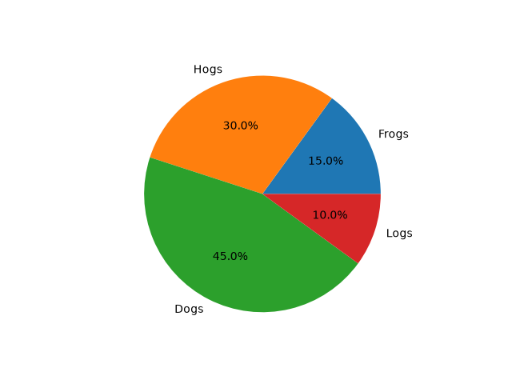
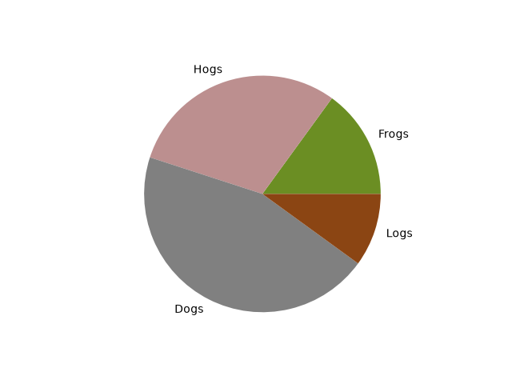
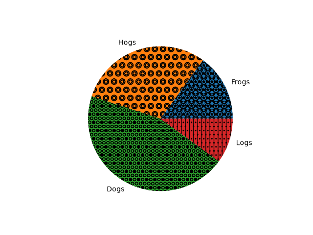
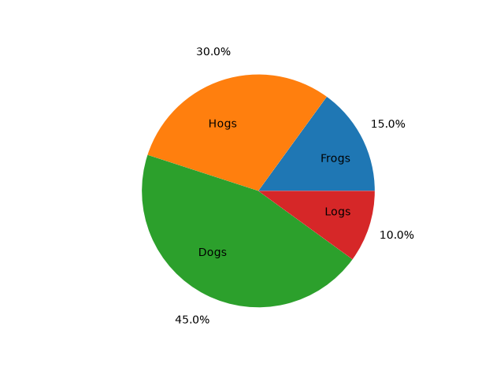
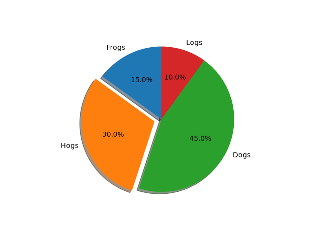
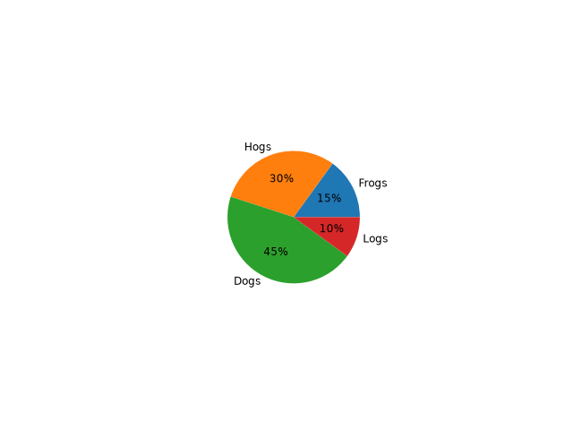
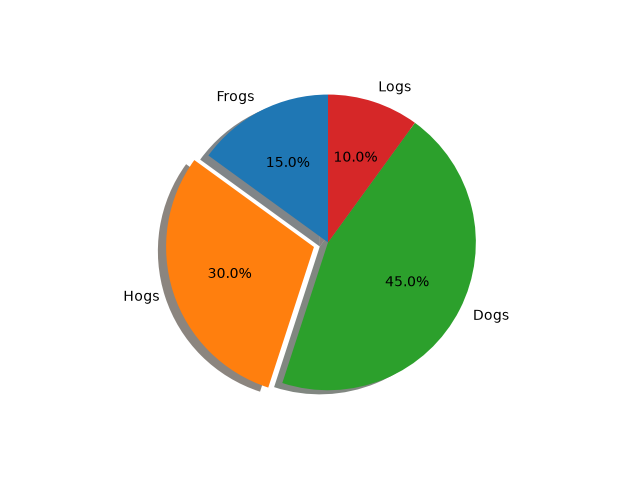

Note
Go to the end to download the full example code.
Pie charts#
Demo of plotting a pie chart.
This example illustrates various parameters of pie.
Label slices#
Plot a pie chart of animals and label the slices. To add labels, pass a list of labels to the labels parameter
Each slice of the pie chart is a patches.Wedge object; therefore in
addition to the customizations shown here, each wedge can be customized using
the wedgeprops argument, as demonstrated in
Nested pie charts.
Auto-label slices#
Pass a function or format string to autopct to label slices.

By default, the label values are obtained from the percent size of the slice.
Color slices#
Pass a list of colors to colors to set the color of each slice.

Hatch slices#
Pass a list of hatch patterns to hatch to set the pattern of each slice.

Swap label and autopct text positions#
Use the labeldistance and pctdistance parameters to position the labels and autopct text respectively.

labeldistance and pctdistance are ratios of the radius; therefore they
vary between 0 for the center of the pie and 1 for the edge of the
pie, and can be set to greater than 1 to place text outside the pie.
Explode, shade, and rotate slices#
In addition to the basic pie chart, this demo shows a few optional features:
offsetting a slice using explode
add a drop-shadow using shadow
custom start angle using startangle
This example orders the slices, separates (explodes) them, and rotates them.

The default startangle is 0, which would start the first slice ("Frogs") on
the positive x-axis. This example sets startangle = 90 such that all the
slices are rotated counter-clockwise by 90 degrees, and the frog slice starts
on the positive y-axis.
Grow or shrink pie#
By changing the radius parameter, and often the text size for better visual appearance, the pie chart can be scaled.

Modify shadow#
The shadow parameter may optionally take a dictionary with arguments to
the Shadow patch. This can be used to modify the default shadow.

References
The use of the following functions, methods, classes and modules is shown in this example: